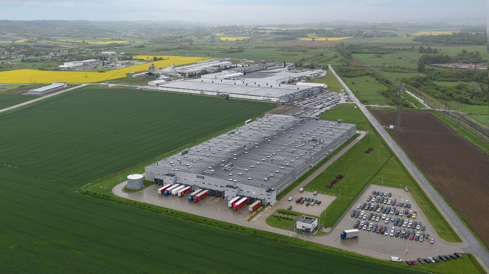

MORE THAN 20 PRODUCTS BY NOWY STYL WITH THE EPD
More and more products in our portfolio can boast the EPD – a globally recognised declaration that describes their environmental impact. Thanks to the detailed analysis of the product’s life cycle, energy used to manufacture it and recycling options we can respond to the environmental requirements of our clients.
EPD (Environmental Product Declaration) cards is the environmental declaration for product. This declaration is a document verified by the third party and officially registered. It provides information on the environmental impacts of the product throughout its entire life cycle, in accordance with the following standards: EN ISO 14025 (Environmental labels and declarations – Type III environmental declarations – Rules and procedures) and EN ISO 14040 (Environmental Management – Life Cycle Assessment – Principles and structure).
Nowy Styl product lines with the EPD
Swivel chairs:
- • 4ME
- • SO-one
- • Viden
- • XENIUM (versions produced in Poland)
Stationary chairs:
- • Axo
- • Cadeira
- • Café
- • Polyfold
- • Wing II
- • Levitate stools
- • Scudo (versions produced in Poland)
Desks and tables:
- • CS5040
- • eModel
- • Easy Space
- • Play&Work
- • Levitate
- • Xio
- • Convenio (versions produced in Poland)
Storage furniture:
- • Easy Space
- • Play&Work
- • Levitate